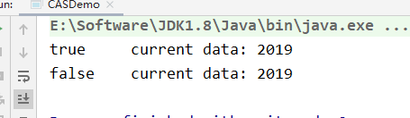
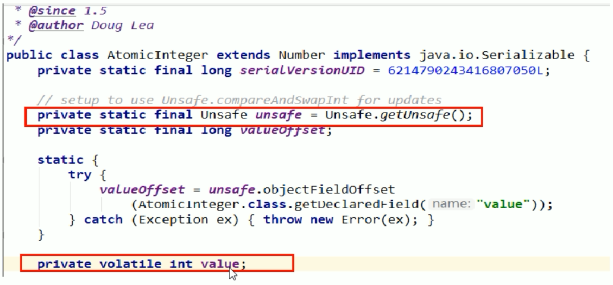

CAS底层原理
概念
CAS的全称是Compare-And-Swap，它是CPU并发原语
它的功能是判断内存某个位置的值是否为预期值，如果是则更改为新的值，这个过程是原子的
CAS并发原语体现在Java语言中就是sun.misc.Unsafe类的各个方法。调用UnSafe类中的CAS方法，JVM会帮我们实现出CAS汇编指令，这是一种完全依赖于硬件的功能，通过它实现了原子操作，再次强调，由于CAS是一种系统原语，原语属于操作系统用于范畴，是由若干条指令组成，用于完成某个功能的一个过程，并且原语的执行必须是连续的，在执行过程中不允许被中断，也就是说CAS是一条CPU的原子指令，不会造成所谓的数据不一致的问题，也就是说CAS是线程安全的。
代码使用
首先调用AtomicInteger创建了一个实例， 并初始化为5
1 | // 创建一个原子类 |
然后调用CAS方法，企图更新成2019，这里有两个参数，一个是5，表示期望值，第二个就是我们要更新的值
1 | atomicInteger.compareAndSet(5, 2019) |
然后再次使用了一个方法，同样将值改成1024
1 | atomicInteger.compareAndSet(5, 1024) |
完整代码如下：
1 | /** |
上面代码的执行结果为

这是因为我们执行第一个的时候，期望值和原本值是满足的，因此修改成功，但是第二次后，主内存的值已经修改成了2019，不满足期望值，因此返回了false，本次写入失败

这个就类似于SVN或者Git的版本号，如果没有人更改过，就能够正常提交，否者需要先将代码pull下来，合并代码后，然后提交
CAS底层原理
首先我们先看看 atomicInteger.getAndIncrement()方法的源码

从这里能够看到，底层又调用了一个unsafe类的getAndAddInt方法
1、unsafe类

Unsafe是CAS的核心类，由于Java方法无法直接访问底层系统，需要通过本地（Native）方法来访问，Unsafe相当于一个后门，基于该类可以直接操作特定的内存数据。Unsafe类存在sun.misc包中，其内部方法操作可以像C的指针一样直接操作内存，因为Java中的CAS操作的执行依赖于Unsafe类的方法。
注意Unsafe类的所有方法都是native修饰的，也就是说unsafe类中的方法都直接调用操作系统底层资源执行相应的任务
为什么Atomic修饰的包装类，能够保证原子性，依靠的就是底层的unsafe类
2、变量valueOffset
表示该变量值在内存中的偏移地址，因为Unsafe就是根据内存偏移地址获取数据的。
从这里我们能够看到，通过valueOffset，直接通过内存地址，获取到值，然后进行加1的操作
3、变量value用volatile修饰
保证了多线程之间的内存可见性

var5：就是我们从主内存中拷贝到工作内存中的值
那么操作的时候，需要比较工作内存中的值，和主内存中的值进行比较
假设执行 compareAndSwapInt返回false，那么就一直执行 while方法，直到期望的值和真实值一样
- val1：AtomicInteger对象本身
- var2：该对象值得引用地址
- var4：需要变动的数量
- var5：用var1和var2找到的内存中的真实值
- 用该对象当前的值与var5比较
- 如果相同，更新var5 + var4 并返回true
- 如果不同，继续取值然后再比较，直到更新完成
这里没有用synchronized，而用CAS，这样提高了并发性，也能够实现一致性，是因为每个线程进来后，进入的do while循环，然后不断的获取内存中的值，判断是否为最新，然后在进行更新操作。
假设线程A和线程B同时执行getAndInt操作（分别跑在不同的CPU上）
- AtomicInteger里面的value原始值为3，即主内存中AtomicInteger的 value 为3，根据JMM模型，线程A和线程B各自持有一份价值为3的副本，分别存储在各自的工作内存
- 线程A通过getIntVolatile(var1 , var2) 拿到value值3，这是线程A被挂起（该线程失去CPU执行权）
- 线程B也通过getIntVolatile(var1, var2)方法获取到value值也是3，此时刚好线程B没有被挂起，并执行了compareAndSwapInt方法，比较内存的值也是3，成功修改内存值为4，线程B打完收工，一切OK
- 这是线程A恢复，执行CAS方法，比较发现自己手里的数字3和主内存中的数字4不一致，说明该值已经被其它线程抢先一步修改过了，那么A线程本次修改失败，只能够重新读取后在来一遍了，也就是在执行do while
- 线程A重新获取value值，因为变量value被volatile修饰，所以其它线程对它的修改，线程A总能够看到，线程A继续执行compareAndSwapInt进行比较替换，直到成功。
Unsafe类 + CAS思想： 也就是自旋，自我旋转
底层汇编
Unsafe类中的compareAndSwapInt是一个本地方法，该方法的实现位于unsafe.cpp中
- 先想办法拿到变量value在内存中的地址
- 通过Atomic::cmpxchg实现比较替换，其中参数X是即将更新的值，参数e是原内存的值
CAS缺点
CAS不加锁，保证一次性，但是需要多次比较
- 循环时间长，开销大（因为执行的是do while，如果比较不成功一直在循环，最差的情况，就是某个线程一直取到的值和预期值都不一样，这样就会无限循环）
- 只能保证一个共享变量的原子操作
- 当对一个共享变量执行操作时，我们可以通过循环CAS的方式来保证原子操作
- 但是对于多个共享变量操作时，循环CAS就无法保证操作的原子性，这个时候只能用锁来保证原子性
- 引出来ABA问题？
ABA问题
。。。。。。。。。
总结
CAS
CAS是compareAndSwap，比较当前工作内存中的值和主物理内存中的值，如果相同则执行规定操作，否者继续比较直到主内存和工作内存的值一致为止
CAS应用
CAS有3个操作数，内存值V，旧的预期值A，要修改的更新值B。当且仅当预期值A和内存值V相同时，将内存值V修改为B，否者什么都不做